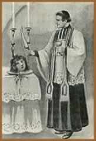
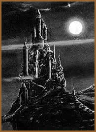
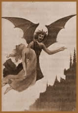

A história da novela
gótica, segundo a concepção purista, foi
curta e conseqüência da reação estética
tida nos círculos cultos da Europa contra o Racionalismo.
Nasceria em 1765 com a aparição do O Castelo
de Otranto de Horace Walpole, e morreria em 1815, depois
da publicação de sua última obra: Melmoth,
o Errabundo, de Charles Maturin. Segundo esta concepção
a novela gótica é inseparável de certos elementos
de ambientação: paisagens sombrias, bosques tenebrosos,
ruínas medievais e castelos com seus respectivos porões,
criptas e passadiços bem povoados de fantasmas, ruídos
noturnos, correntes, esqueletos, demônios... Sua máxima
representante é Ann
Radcliffe.
Mas
muitos lhe outorgamos uma definição diferente, de
forma que cabem nela não só aquelas histórias
que sucedem fisicamente nos porões e criptas dos castelos,
senão, prioritariamente, as que têm lugar nos mais
tenebrosos passadiços e criptas de nossa própria
mente. Desta maneira uma novela gótica pode ter ou não
elementos sobrenaturais, pode suceder nos passadiços de
um castelo medieval ou nos corredores não menos tenebrosos
de uma nave espacial, pôde escrever-se no século
XVIII, no XVII ou no XXI.
O escritor não emprega
os elementos tradicionais do gênero gótico para produzir
de forma técnica e matemática determinados efeitos,
senão aqueles nascem de forma natural depois da imersão
em seu próprio subconsciente e como próprias metáforas.
Isto é, a novela gótica se constrói espontaneamente
a base de símbolos que habitam no nas profundezas de nossa
mente, da mesma forma que ocorre nos sonhos. Assim, as trevas
são produto de nossa própria escuridão: sentimentos
de solidão, medo, desagrado ante o que nos rodeia; passadiços
e subterrâneos, os múltiplos recôncavos de
nosso cérebro, a incerteza sobre o caminho a tomar; os
personagens fascinantes, esses que procuramos em vão na
realidade ou esses que, em todo ou em parte, quiséramos
ser.
O escritor de hoje ou o de
dois mil anos atrás, vive envolvido num acúmulo
de dúvidas e mistérios que anseia responder. No
início, as perguntas versam a respeito do cotidiano (o
porquê do comportamento humano). Quando se descobre as respostas
ou verificado sua inexistência, se produz um sentimento
de alienação, de negação e rejeição
pertencente à espécie humana. A única maneira
de não perecer na mais dolorosa solidão é
a crença de que existe outro mundo não dominado
pelo homem, um além. O fato de que sua manifestação
na literatura costuma corresponder-se com vampiros, fantasmas
e o diabo, não é senão uma demonstração
da crença na existência de um mundo melhor: se existe
o diabo, também existe Deus e toda essa Bondade e Beleza
que se supõe. A moderna substituição do demônio
pelos extraterrestres não afeta a esta afirmação:
um monstro malvado como Alien nada mais é do que a confirmação
da existência de outros mundos e, por tanto, de outras culturas
e seres superiores e supostamente melhores que os conhecidos.
O escritor se submerge no mundo do sobrenatural para ser salvo
por seres superiores em circunstâncias que nada têm
que ver com as de seu triste meio. Para ilustrar o dito até
aqui, uma escritora contemporânea: Anne Rice.
Anne
Rice e Lestat
A
juventude de Anne Rice (1941) não foi um caminho
de rosas. No colégio era uma menina solitária,
e nunca em sua infância sentiu que tivesse o amor
que precisava. Perdeu sua mãe; uma alcoólatra,
aos quatorze anos. Seu pai, pouco afetuoso, voltou a casar-se
menos de dois anos depois, o que obrigou a Anne a mudar-se
com eles para o Texas. Em 1972 faleceu sua filha de seis
anos, vítima de leucemia. No ano seguinte, fruto
da dor e numa tentativa de perpetuar a sua filha sob a aparência
de uma menina vampiro, nasceu Entrevista
com o Vampiro (escrita em 1973 e recusada para
sua publicação em várias editoriais
até 1976).
Anne Rice afirma: "os
escritores escrevem sobre o que lhes obceca. Perdi a minha mãe
quando tinha quatorze anos. Minha filha morreu aos seis anos.
Perdi minha fé católica. Quando escrevo, a escuridão
está sempre ali. Dirijo-me para onde está a dor"
(Revista People, 05/12/88).
O personagem mais amado por
Anne e seus leitores é o vampiro Lestat. Segundo Anne:
"É difícil descrever Lestat. De alguma
maneira, é toda minha vida, porque inclusive quando não
estou escrevendo sobre Lestat, estou contemplando o mundo através
de seus olhos. Foi ele quem me transformou numa viajante, quem
me transportou fora de mim mesma e me libertou das preocupações
por minhas limitações, tanto físicas como
espirituais. Lestat é mais do que um personagem criado
por mim. É um símbolo de algum tipo de liberdade
e domínio. Representa o lado cruel que há em nós,
mas é parte de meus pensamentos dia e noite; e parte de
minhas conversas dia e noite, suponho. Ante quase tudo o que vejo,
me pergunto: que pensaria Lestat disto? Como reagiria Lestat ante
isto? Portanto, diria que ele é minha outra metade. Mas
é minha metade masculina e cruel que, obrigado a Deus,
não existe outro na ficção".
Os
principais elementos do Conto Gótico
Os teóricos da literatura
empregaram muito tempo em delimitações temporárias
e subcategorizações da novela gótica. Como
o representado por Walpole e Sophia Lee, diferenciado pela falta
de explicação aos fenômenos sobrenaturais.
O Gótico Ilusório de Ann Radcliffe; onde
tudo encontra uma explicação racional. O Gótico
Satânico, representado por Mathew Gregory Lewis; onde
o explicável e o inexplicável se misturam e os fatos
se apresentam de forma rude, sem uma prévia aclimação
ao terror. Este segmento também foi continuado por Maturin.
Há ainda o Realismo Negro, Gótico Filosófico
ou Didático Gótico, marginal ou como uma
paródia. Assim, limitando-se com freqüência
ao século XVIII e princípios do XIX, com o qual
unicamente Walpole, Radcliffe, Maturin e Lewis destacam na lista.
Para outros, a acepção é muito mais ampla
e inclui à prática totalidade dos grandes autores
da literatura ocidental.
Da
cripta da mente humana saíram as obras mais gloriosas:
Hamlet, Fausto, A divina comédia e uma infinidade
mais. Obras muito diferentes entre si, mas com o elemento comum
de ser uma reação oculta (ou não), inconsciente
(ou não) do autor contra seu meio. Devido às características
de estilo de um tipo de obra que exige concentrar ao máximo
a essência emocional e vivencial do autor (ainda que transmutada
até o irreconhecível), junto com o fato de que os
elementos simbólicos que aparecem nela são comuns
ao subconsciente de todos nós, a novela gótica se
caracteriza por sua capacidade para captar o atendimento e induzir
a mais profunda concentração ao leitor, por penetrar
em seu cérebro e mostrar-lhe seus próprios fantasmas
e desejos.
Chris Baldick, em sua introdução
The Oxford Book of Gothic Tales, assinala magistralmente:
"Em sua estrutura podemos reconhecer os porões
e criptas do desejo reprimido, os devaneios e campanários
da neurose, o mesmo ao aceitarmos o convite de Poe
para ler o Palácio Assombrado, tanto do poema como da alegoria
da mente de um louco".
Os elementos sobrenaturais
e de fantasia são tão inerentes ao gênero
humano que suas primeiras obras literárias (por não
falar de suas crenças) são estritamente fantásticas.
Realmente se pode apreciar que entre A Odisséia
e O Senhor dos Anéis decorreram mais de dois mil
anos? A forma narrativa da fantasia mudou um pouco, só
um pouco. Também se diversificou e num mesmo tempo aparecem
diferentes correntes, mas as motivações e os elementos
utilizados (à grosso modo), são idênticos.
Para o leitor, a principal motivação é ausentar-se
de seu aborrecedor mundo. Mas para isso, alguns elementos são
necessários:
Ambientes
Desconhecidos
Lugares e épocas passadas
ou inexistentes que não possam recordar-nos nosso presente
(ambientação na Idade Média durante o século
XVIII. No final do século XX em planetas desconhecidos,
naves espaciais, épocas futuras, mas também em épocas
passadas). Quanto mais viagens, sejam geográficas ou cronológicas,
melhor será.
Personagens
Fascinantes
Personagens sempre inteligentes,
enigmáticos e misteriosos, conscientes de sua culpa e atraentes.
Romantismo
Este ponto precisa de exemplos?
Perigo
Presença obrigatória.
O perigo sempre está presente através do terror.
Garotas
em apuros
Tradicionalmente, para ser
salva pelo herói. Possui um papel secundário. Inclusive
na pura literatura gótica, que ocorre em pleno processo
de emancipação feminina, e cujas mais importantes
autoras são mulheres.
Assim
podemos perceber que a literatura gótica não é
um gênero que nasceu subitamente e morreu numa época
determinada, senão um mesmo gênero, o do sobrenatural
(A odisséia não era fantasia. Para os povos
da época, os deuses eram reais, não personagens
de ficção), que no século XVIII põe
em moda uns elementos de ambientação muito concretos,
os quais simplesmente substituem a outros, e que, no futuro (hoje)
serão por sua vez substituídos pelas novas visões
que impõe a evolução de nossa história,
mas que, basicamente, a cripta do monge e a cabine da nave cumprem
exatamente o mesmo cometido, bem como Frankenstein. O
medo, os medos clássicos, primitivos, não são
um invento gótico, como alguns sustentam. Os personagens
podem nascer e viver numa nave espacial, não há
problema. Mas se queremos desintoxicarmos da visão futurista,
podemos fazê-los conviver com os cruzados, com os antigos
egípcios e inclusive com o neanderthal. Hoje em dia há
dúzias de contos com esses temas, conseqüência
da popularização dos estudos univer-sitários
e a acessibilidade a todo tipo de documentação.
Esses temas, baseiam-se nas mesmas causas não premeditadas
que fez a Idade Média tornar-se moda no século XVIII
(as descobertas das ruínas de Herculano e Pompéia
e das ruínas medievais deram lugar a obsessivos estudos
sobre o passado que marcaram a arte e o pensamento de toda uma
época). A ciência, a técnica e o apogeu do
conhecimento sobre o passado da humanidade, estão marcando
a nossa, que, literariamente (e cinematograficamente) traduz-se
simultânea e paradoxalmente no auge (não no nascimento,
que se produziu há muito) da ciência ficção
e da novela histórica.
Ao referir-me a uma novela
como gótica me refiro àquela, qualquer que seja
a época em que tenha sido escrita, que propõe uma
viagem ao interior da mente humana utilizando e ao mesmo tempo
despindo seus medos primitivos. Portanto, vemos que a denominada
novela gótica clássica do século XVIII, não
faz senão introduzir umas pequenas variações
no mais velho tema da humanidade: o sobrenatural; que nasce no
século XVIII (ou se pode conceber uma cena mais gótica
do que Caronte sumido nas trevas da lagoa Estigia, com o rumor
dos mortos ao fundo, e transportando em sua barca, as almas dos
novos defuntos?) não morre. Simplesmente, como a energia
ou os dinossauros, transforma-se.